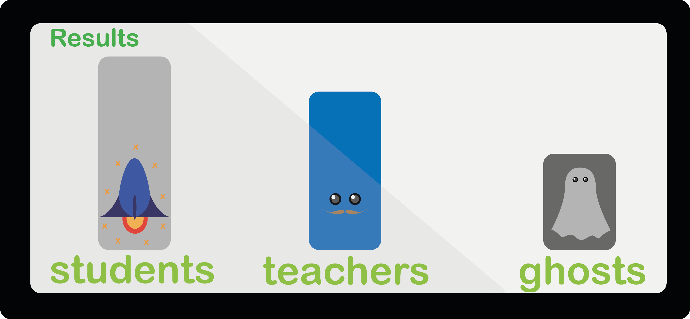
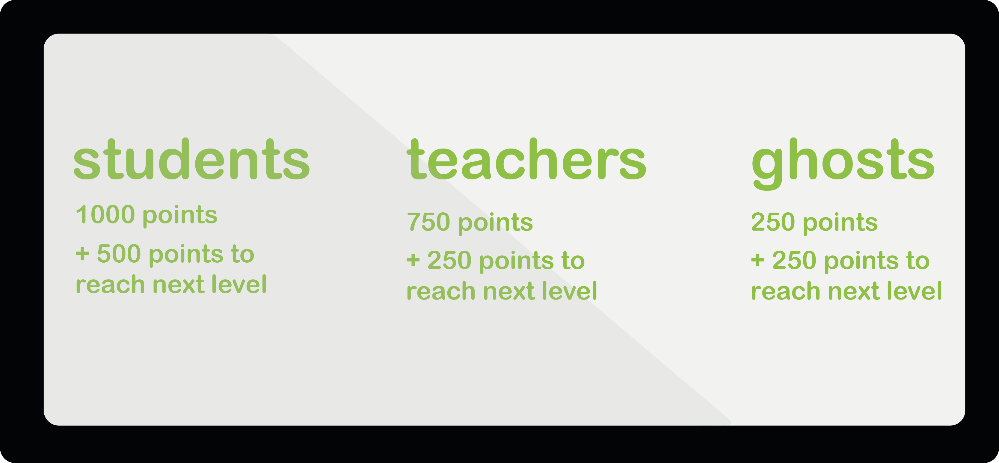
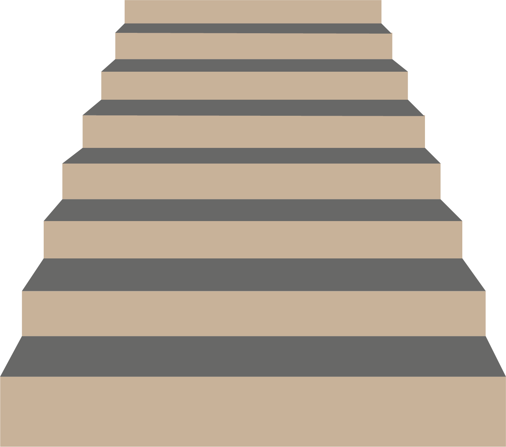

Voordat u start met de hele pagina door te lezen opzoek naar dat wat relevant is voor u,
laat mij helpen! Voor het concept voor een exterion game gaat u naar Student VS Teachers.
Is dat toch niet wat u zoekt, maar wilt u mijn onderzoek zien? Ga dan naar het onderzoek.
Als laatst heb ik nog een reflectie geschreven die u nog wel zou willen lezen, ga dan naar mijn reflectie.
Assignment: Students VS Teachers
Het spel: Op een leuke en gezellige manier is het mogelijk
om een competitie te creëren tussen studenten en docenten. Door gebruik
te maken van de trappen door heel De Haagse Hogeschool heen, kan iemand
punten verdienen voor zijn of haar eigen team. Maak gebruik van de lift
dan worden er punten afgetrokken. Ook zijn op willekeurige momenten en
plekken extra punten te verdienen. De speler merkt dit op door een
opgewekt geluidje.
De meer punten een team heeft, hoe hoger zij kunnen komen in levels.
De levels zijn noob, pro en legend. De spelers blijven op de hoogte van de
stand van zaken door middel van de schermen die door de school heen hangen.
In het spel zijn er ook zo genoemde Ghosts. Dit zijn mensen die het gebouw
rondlopen zonder dat zij docent of student zijn (of gebruik maken van de app).
Zij verdienen punten door de trap te nemen en doen ook mee op het scoreboard.
Regels:
Er zijn een aantal basisregels in het spel om ervoor te zorgen dat het voor iedereen leuk blijft.
Door gebruik te maken van de trap krijgen de teams punten.
Door de lift te gebruiken worden er punten afgetrokken van het desbetreffende team.
Door middel van De Haagse Hogeschool applicatie worden de teams gevormd.
Misschien nog wel de belangrijkste regel komt nu nog.
Het is allemaal voor de lol en er is geen rede om het andere team on-respectvol te behandelen.
Toegang tot het spel
Door QR codes door de school te hangen op diverse plekken kunnen de spelers
mee doen aan het spel. Door de code te downloaden worden zij of een speler voor
het team student (#Student) of het team docent (#Teacher). Doe dit niet,
dan worden zij direct onder verdeeld als Ghosts.
Het is mogelijk dat iemand niet fysiek in staat is om gebruik te maken van de
trap doordat hij of zij bijvoorbeeld in een rolstoel zit. Dan kan altijd de
lift nog gewoon gebruikt worden en worden er geen punten afgetrokken.
Dit komt doordat de pressure points op de desbetreffende zitten en deze meten
het gewicht. Dit geldt ook voor medewerkers van het schoonmaak bedrijf met zwaardere karren.
Resultaten
Door gebruik te maken van de schermen die al hangen in de school,
worden de resultaten visueel weergegeven en als puntentelling. In de trappen
en liften zitten pressure points die het gewicht meten wat erop komt.
Dit betekent dat mensen daadwerkelijk hun lichaam kunnen gebruiken in het spel.
Het systeem plust of mint de punten die de teams maken.


Sensoren
In de trappen en liften zitten pressure points die het gewicht meten wat erop komt.
Dit betekent dat mensen daadwerkelijk hun lichaam kunnen gebruiken in het spel.

The research
The laughter tree
Beschrijving: Een game waar kinderen de boom moeten laten lachen door middel van hun eigen lichaam.
Door grote bewegingen te maken, wordt de boom gestimuleerd om te lachen wat resulteert dat
de speler ook moet gaan lachen. Het blijkt dat men gaat lachen wanneer zij iemand zien of horen lachen.
De game is nog in ontwikkeling voor kinderen in het ziekenhuis om te zorgen dat zij een beter zelfbeeld krijgen,
ook in de omgeving van een ziekenhuis.
Doel:
Het doel van dit spel en onderzoek is het verbeteren van kinderen hun zelfbeeld
van hun innerlijk en uiterlijk. Dit kan door middel van lachen.
Techniek:
De speler speelt het spel alleen en door een camera bevestigd voor
het scherm worden de bewegingen opgevangen. De speler maakt grote bewegingen waardoor
het spel element ook gaat bewegen.
Bubble poppen
Beschrijving:Een game waarin de spelers bubbels kunnen poppen,
zoals in het echt bubbelplastic kan gepopt worden. Door gebruik te maken van een scherm
of effe achtergrond kan de projector de bubbels projecteren en de speler popt de
bubbel door middel van een handschoen.
spelers: Het spel is in de vorm van multiplayer en de bubbels
van de spelers gaan door elkaar heen. Hierdoor moeten de spelers in elkaars ruimte
komen en ontstaat er fysiek contact met elkaar. Doordat de spelers tegelijkertijd hun
eigen bubbels moeten poppen kan er ook een competitie ontstaan.
Dit kan ervoor zorgen dat de spelers meer hun best gaan doen en dat het
spel meer naar een sport neigt dan een spel.
Doel:Het doel van het spel is jouw eigen bubbels poppen
en meer dan je tegenspeler. Hierdoor is de speler actief bezig en beweegt
hij of zij veel en kan hij of zij werken aan de gezondheid op een speelse manier.
Techniek:Het spel wordt gespeeld door middel van een Wiimote,
een handschoen om de bubbels te poppen en effe muur waarop de projector de
bubbels kan weergeven. De Wiimote houdt het infrarode licht bij wat de speler
afzend door middel van het dragen van de handschoen. Zo werken de onderdelen
met elkaar samen voor een optimaal speel plezier.
The reflection
Het was een interessant onderwerp waarin ik nog niet bekend was, maar daar
gaat nu een verandering in komen. Ik kan het mij voorstellen dat de exterion games/
interfaces een grote hit zijn in en op diverse plaatsen. Het is een onderwerp waar
ik nog wel onderzoek naar wil doen om te zien wat er allemaal nog mogelijk
is en daarvoor zou ik literatuur opzoeken om te lezen.
Het meest aantrekkelijke aspect wat ik tot nu toe heb gezien is de extertion
games/interfaces in de vorm van een sport en welzijn van de gebruikers.
Op de manieren waar ik nu kennis mee heb gemaakt zie ik zeker een toekomst
waarin meer mensen dit gaan gebruiken. Juist in een wereld waar digitalisering
en mobile interfaces een steeds dominantere rol gaan spelen, is het leuk om te
zien dat juist de technologie voor spellen, gezondheid en onderzoek wordt ingezet.
Ik hoop dat de verdere ontwikkelingen in dit gebied de gebruikers op een positieve en
gezonde manier laat omgaan met technologie en dat de wereld daarvan een betere plaatst
wordt. De mogelijkheden zijn er.
Ik had nog geen echte verwachtingen in dit gebied omdat ik het slechts kende van de kick-off.
Na het hoorcollege was ik nog afwachtend, maar wel gemotiveerd om aan de slag te gaan.
Tijdens het ontwikkelen van een game voor de HHS begon ik mij meer te realiseren dat
dit een leuk iets is. Het onderzoek doen naar nieuwe games/interfaces was leuk om te
doen omdat ik met nieuwe dingen in contact kwam.
Doordat ik nog geen verwachtingen had, kon het onderwerp alleen maar boven verwachting
zijn en dus positief uitpakken. Dit heeft het ook daadwerkelijk gedaan en ik kijk
uit naar meer ontwikkelingen. Dit is zeker iets voor mij om in de gaten te houden.